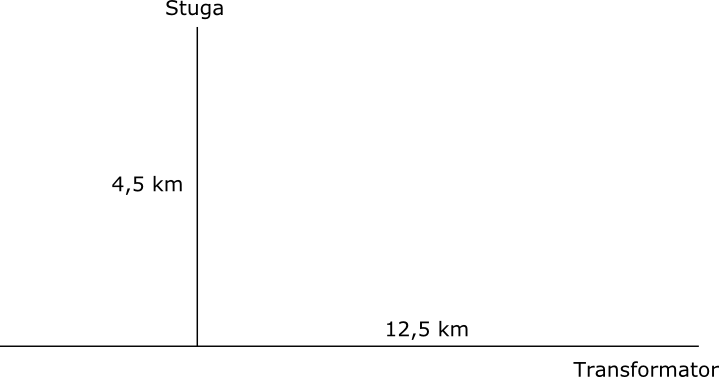
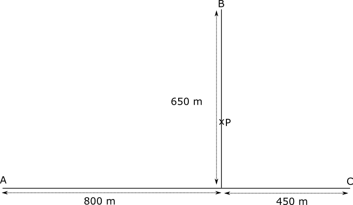

7. Tillämpningar av rotfunktionen
Till nästa tar vi och ser på tillämpningar där vi undersöker funktioner där vi har kvadratrötter.
Exempel 1 Från en ö som befinner sig 2,5 km från kusten skall man dra en elkabel till närmaste transformator i elnätet. Närmaste transformator befinner sig 7,0 km från ön då man följer strandlinjen. Att dra kabel genom havet kostar 35 €/m och att dra på land kostar 10 €/m. Bestäm hur man borde dra kabeln så att det kostar så litet som möjligt?
Exempel 2 Bestäm största värdet för funktionen \( f(x)=x\sqrt{6-x^2} \).
Uppgifter
Annas morfar som bor i en stuga mitt i skogen. Till stugan kommer man längs en 4,5 km lång rak skogsstig. Från korsningen av skogsstigen och landsvägen finns en transformator på avståndet 12,5 km. Annas morfar vill ha el till stugan och behöver din hjälp så att det är så billigt för honom som möjligt. Det lokala elbolaget erbjuder att dra el genom skogen och längs med landsvägen. Att dra elkabel genom skogen kostar 20 €/m och att dra längs med landsvägen kostar 8 €/m. Vad kostar det som billigast?

Funktionen som ger priset är \( f(x)=20\sqrt{x^2+4,5^2}+8(12,5-x) \).
Derivatans nollställe är \( \dfrac{3\sqrt{21}}{7} \approx 1,96 \).
Det minsta priset är \( f(\dfrac{3\sqrt{21}}{7}) \approx 182,49 \) €.
Anna, Bertil och Cecilia befinner sig i punkterna A, B och C på en sandplan. De tänker träffas i punkten P. Bestäm punkten P så att den totala sträckan som alla behöver flytta på sig är så kort som möjligt. Hur långt från B skall de träffas?

Funktionen som ger den totala sträckan är \( f(x)=\sqrt{800^2+x^2}+\sqrt{450^2+x^2}+650-x \). Här är \( x \) avståndet från sträckornas gemensamma punkt.
Derivatans nollställe är i punkten då x=342,88 m.
Avståndet från B är 307,12 m, alltså 310 m.
- Arean för en kvadrat är i början 0 och växer sedan konstant med 1 m2 per sekund. Med vilken hastighet växer kvaratens sida vid
- 0,5 sekunder
Formeln för arean är \( A(x) = x^2 \). Längden av sidan är \( s(x) = \sqrt{x} \).
Derivatans värde i 0,5 är, \( s'(0,5) = \dfrac{1}{2\sqrt{0,5}} = \dfrac{1}{\sqrt{2}} \approx 0,71 \) m/s.
- 5,0 sekunder.
Derivatans värde i 5,0 är, \( s'(5) = \dfrac{\sqrt{5}}{10} \approx 0,22 \) m/s.
- 0,5 sekunder
- Volymen för en kub är i början 0 och växer sedan konstant med 1 m3 per sekund. Med vilken hastighet växer kubens sida vid
- 0,5 sekunder
Formeln för volymen är \( V(x) = x^3 \). Längden av sidan är \( s(x) = \sqrt[3]{x} \).
Derivatan är \( s'(x) = \dfrac{\sqrt[3]{x}}{3x} \).
Derivatans värde i 0,5 är, \( s'(0,5) = \dfrac{\sqrt[3]{0,5}}{3 \cdot 0,5} = \dfrac{1}{3}\sqrt[3]{4} \approx 0,53 \) m/s.
- 5,0 sekunder.
Derivatans värde i 5,0 är, \( s'(5) = \sqrt[3]{5}\dfrac{1}{15} \approx 0,11 \) m/s.
- 0,5 sekunder
- Annas farmor bor på en ö som är 1,5 km väst från fastlandet. Rakt norrut längs med fastlandet finns ett postkontor på avståndet 6,0 km. Annas farmor ror med hastigheten 1,0 km/h och går med hastigheten 2,0 km/h. Bestäm den kortaste tid det tar för henne att föra post till postkontoret.
Funktionen är \( f(x) = \dfrac{s_1}{v_1}+\dfrac{s_2}{v_2}=\dfrac{\sqrt{1,5^2+x^2} \textrm{ km}}{1,0 \textrm{ km/h}}+\dfrac{6,0-x \textrm{ km}}{2,0 \textrm{ km/h}} \).
Derivatafunktionen har ett nollställe i \( \dfrac{\sqrt{3}}{2} \). Eftersom vi har en parabel som öppnar sig uppåt får vi ett minsta värde i \( f(\dfrac{\sqrt{3}}{2}) \approx 4,3 \) h.
Svar, 4,3 h eller 4 h 18 minuter.
- Bestäm största värdet för funktionen \( f(x)=\sqrt{8-2x^2} \).
Funktionen är definierad då \( -2\leq x \leq 2 \). Derivatafunktionen är \( f'(x)=\dfrac{-\sqrt{2}x}{\sqrt{4-x^2}} \) som har ett nollställe i \( x=0 \).
Då \( x < 0 \) är \( f'(-1)=\dfrac{-\sqrt{2}(-1)}{\sqrt{4-(-1)^2}} > 0 \) och då \( x > 0 \) är \( f'(1)=\dfrac{-\sqrt{2}\cdot 1}{\sqrt{4-1^2}} < 0 \).
Vi har ett största värde i \( x=0 \). Största värdet för funktionen är \( 2\sqrt{2} \).
- Bestäm största och minsta värdet för funktionen \( f(x)=x\sqrt{8-x^2} \).
Funktionen är definierad då \( -2\leq x \leq 2 \). Derivatafunktionen är \( f'(x)= \dfrac{\sqrt{2}((4-x^2)-x^2)}{\sqrt{4-x^2}} \).
Nämnaren är i positiv i definitionsmängden, så vi undersöker täljaren. \( \sqrt{2}((4-x^2)-x^2)=0 \) ger nollställena för derivatan som är \( \pm \sqrt{2} \).
När vi undersöker tecknen för derivatan får vi att \( f'(-2) < 0 \), \( f'(0) > 0 \) och \( f'(2) < 0 \).
Vi hittar ett minsta värde i \( f(-\sqrt{2})= -2\sqrt{2} \).
och ett största värde i \( f(\sqrt{2})= 2\sqrt{2} \).
- I en halvcirkel som representeras av funktionen \( f(x)=\sqrt{4-x^2} \) ritas in en maximalt stor rektangel. Bestäm storleken av denna rektangel.
Rektangeln har hörnpunkterna \( (x,f(x)) \). Radien för cirkeln är 2 så vi tar och arbetar med intervallet [0,2].
Funktionen som ger arean är \( A(x)=x\cdot \sqrt{4-x^2} \) som vi antingen kan derivera och undersöka eller så flyttar vi in \( x \):et och undersöker \( \sqrt{x^2(4-x)^2} \).
Derivatafunktionen har ett nollställe då \( x=\sqrt{2} \).
Eftersom vi har ett intervall får funktionen sina största och minsta värden i intervallers ändpunkter eller i derivatans nollställen.
\( A(0)=0 \), \( A(2)=0 \) och \( A(\sqrt{2})=4 \). Storleken är 4 a.e.
- Man har reserverat 16 kvadratmeter tyg för ett tält som har formen av en rak cirkulär kon. Tyg används inte för tältets botten. Bestäm diametern för den cirkulära basytan då tältets volym är så stor som möjligt. [V15, 9]
Vi namnger radien med \( r \) och sidan med \( s \). Höjden är då \( h=\sqrt{s^2-r^2} \). Arean för lätets mantelyta är \( A=\pi rs=16 \) som ger oss att \( s=\dfrac{16}{\pi r} \).
Hur kommer du sedan åt en funktion som beskriver tältet volym?
Tältets volym är \( V=\dfrac{1}{3}\pi r^2 h = \dfrac{1}{3}\pi r^2\sqrt{s^2-r^2} \).
Vi ersätter \( s \) och får \( V(r)=\dfrac{1}{3}\pi r^2\sqrt{(\dfrac{16}{\pi r})^2-r^2} = \dfrac{1}{3}\sqrt{256r^2-\pi^2 r^6} \).
\( V(r) \) är störst då \( 256r^2-\pi^2 r^6 \) är som störst. Vi deriverar \( f'(r)=512r-6\pi^2r^5 \), som har nollställena \( r=0 \) eller \( r=\pm \dfrac{4}{\sqrt[4]{3\pi^2}} \).
Av dessa duger endast \( r= \dfrac{4}{\sqrt[4]{3\pi^2}}\approx 1,715 \).
Diametern är 3,43 m.